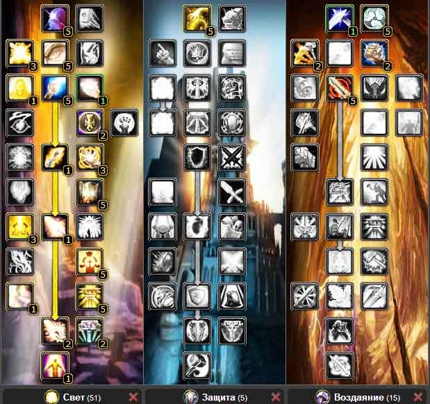
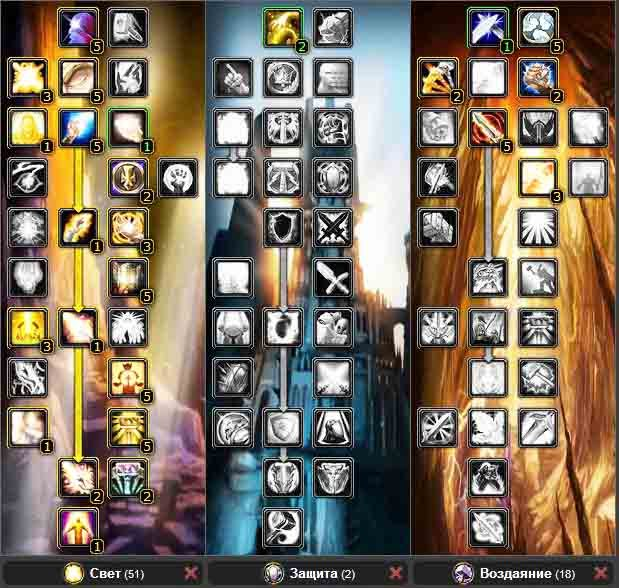
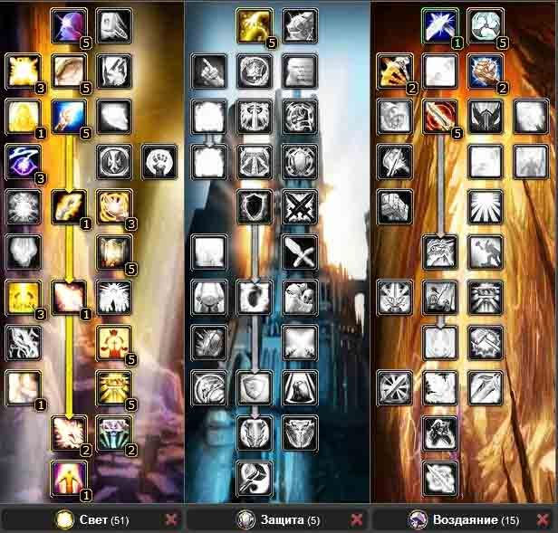

Гайд по Паладину «Свет» (Holy Paladin) в PVE WOW Lich King 3.3.5
В этой статье я расскажу о холи паладине — паладине в первой ветке талантов. Эта ветка называется «Свет» и предназначена для отхила союзников. Холи паладина можно сравнивать с хирургом, так как он рассчитан на точный отхил одного из товарищей по команде. Если шаман или друид хилят в основном на ОАЕ (заклятия, которые действуют на несколько игроков или же мобов одновременно), то паладин хилит одного, максимум двух человек, но этот ХПС (количество отхиленых очков) будет очень высоким. Попросту, роль холика состоит в том, чтобы вытаскивать почти визжащих, орущих посетителей респауна с того света. Еще скажу, что холи пал отличный напарник на арене, завалить эту сволочь очень трудно, если игрок знает свое дело.
Здесь можно предложить вам несколько вариантов билда, и каждый из вас может выбрать наиболее подходящий для себя. Если в вашем статике на 25 человек есть еще один пал в хилее, то улучшенную ауру сосредоточенности, если она у него есть, то вам можно не вкачивать. А вообще она повышает кастерам ДПС на большинстве боссов. Хочу еще заметить, что вам как хилу в обязательном порядке необходим такой аддон как HealBot, он поможет вам хилить весь рейд при помощи одного лишь клика.

Билд 2.
Второй вариант раскладки талантов называется среди геймеров Крит билд. Из названия понятно, что делаем раскладку талантов таким образом, чтобы немного увеличить ваш крит. Вы получите + 3 процента крита, но всему исцелению нанесете ущерб тоже на 3 процента. Так что здесь выбирать вам – какой билд использовать.

Билд 3.
Следующий вариант билда так же является распространенным среди геймеров и встречается он наиболее часто. Единственное, что его отличает от остальных, так это то, что у него вкачена концентрация. Потому, что крит билд с наличием концентрации так же очень эффективен в боях против элитных противников.

Единственное, что отличает билд Холи паладина от всех остальных, так это отсутствие такого таланта как «Благоволение света», который снижает холилайт на 0.5 секунд. Так что, как говориться, выбирайте и не стесняйтесь.
2. Характеристики
1.«МП5» — можно расшифровать как «Мана каждые 5 секунд» — эта характеристика будет давать вам будет постоянно увеличивать количество маны до 1200 единиц в минуту в независимости от каста или чего-то еще. Конечно это не идеальный показатель, но для СПД-паладина это хороший уровень.
2.«Интеллект» — для хила пала это важный стат и здесь необходимо выучить обычное правило, что для вас интеллект это важнейшая характеристика. Вам просто необходимо эту характеристику увеличить всеми возможными и невозможными способами. Здесь даже можно выстроить приоритет для хила – это в первую очередь интеллект, следом будет идти хаст, потом крит, спд и м5. Каждая шмотка или камень будут поднимать вам интеллект и за + 100 единиц к интеллекту и я сейчас расскажу, что в результате получится:
+ 121 единица к вашему интеллекту с бафом «Благословление Королей» и таким талантом как «Божественный интеллект»
+ 1815 единиц к мане.
+ 37.8 единиц к Мп5, но только тогда, когда вы будете использовать скилл по КД.
+ 90.77 единиц от показателя – Восполнение.
+ 4.5 единиц к Мп5 от таланта «Волшебный поток» если вы играете Эльфом крови.
+ 25.3 единицы к вашей силе заклинания.
+ 0.759 единиц к критическому удару заклинаниями.
Если подвести итог, то здесь очевидно, что со 100 единицами интеллекта вы получите гораздо больше мп5, чем набирая +100 самого мп5. Если посчитать конкретно, то это выглядит примерно так: к 37.8 прибавить 90.75 и плюс 4.5 сумма будет равна 133 м5. К тому же вы получите большой манапул, спд и крит. Если у холи пала вкачан такой талант как «Свечение», то после каждого выпада крита будет восстановлено 30 процентов маны. Поэтому друзья я просто уверен, что интеллект во многом выигрывает характеристики мп5.
3.«Сила заклинаний» или как говорят СПД. Является очень важным показателем, ведь основным заклинанием является Флешка, которая хилит совсем дешево, мало, но очень быстро. У Холи паладинов приоритет в прокачке немного отличается от других: на первом мест стоит СПД, затем хаст, но только до капа, потом мп5 и интеллект. Когда достигли уровня хасты, то по приоритету вместо скорости ставим мп5 и крит. Шмотки должны после набора хасты иметь крит и мп5. Тем самым вы обеспечите себя на бесконечное пользование флешкой, и вы никогда не просядете по мане. В итоге могу сказать, что вам просто необходимо так же максимизировать вашу силу заклинаний ведь он является самым важным параметром после достижения капа мп5 и капа хасты..
4.Рейтинг скорости – этот показатель уменьшает ваше время чтения заклинаний и снижает ваш ГКД. С полными бафами в рейде вам необходимо будет около 20.6% к рейтингу скорости или 676 единиц со шмота. Чтобы вы достигли такого понятия как мягкий кап скорости, то вам необходимо набрать 50 процентов для ГКД в одну секунду.
5.Рейтинг крита – это тоже у паладина важный стат, ведь при его выпаде восстанавливается больше на 50% здоровья и сокращаются затраты маны на 30 процентов. Со шмоток 100 единиц крита увеличивают ваш шанс на 2.17% критического удара. Крит значительно усиливает заклинание «Свет небес» и «Вспышка света».
3. Способности
Свет небес — является основным кастом для холи паладина, который довольно часто кастуется во время боя. Существует много способов для снижения затрат маны. Это могут быть как символы, так и манускрипты. Заклинание Свет небес часто бывает избыточным, но вы не должны об этом беспокоится. Если количества вашей маны будет хватать до конца боя, то будет не важным – насколько ваше исцеление избыточно.
Вспышка света — является альтернативным заклинанием, которое заменяет Свет небес, а так же это основное заклинание у паладинов. С использованием Исцеляющего света, Вспышка света получит + 113% от вашей силы заклинаний.
Талант Божественность прибавит к исцелению 5%. Если во время боя вы кастанете на противника, который имеет баф Священный щит, то на противника наложен будет хот, который равняется 100 процентам исцеления от вспышки.
Шок небес — совместно с заклинанием Прилив света Шок небес кастуется мгновенно, или увеличивает на 20% критический удар от света небес. Показатель – сила заклинаний увеличит силу шока небес на 90.5%. Это лучшее заклинание, которое можно использовать в момент движения, или просевших по ХП танков. Используется это заклинание только в экстренном случае.
Частица света — это замечательное заклинание так же применяется только в исключительных случаях, когда танк просел по хп, или вы сами. В общем целью частицы света является тот, кто не по-детски отгребает дамаг от босса или другого противника. Существует несколько вариантов для применения этого заклинания:
— если вы в рейде один, но есть два танка, то можно не хилить рейдеров, а смотреть только за танками. Этот момент самый простой. Берем первого танка в таргет, а на другого, вешаем частицу света.
— если в рейде присутствует два танка, но один из них еще по шмоту слабоват. В этом случае всегда делаем упор на слабого танка и одновременно подхиливаем весь рейд.
— если танки одеты просто отлично, то необходимо выбирать у кого маленький самоотхил. Например, если в роли танка выступает Блад ДК, то у него просто отличный самоотхил и бросать на него частицу света нет необходимости, как и на Прото паладина, ведь у него блок от ударов равен 60 процентам.
Святая клятва — поможет вернуть огромное количество растраченной маны, но уменьшит силу заклинаний на 50 процентов. Поэтому использовать его необходимо совместно с вашими способностями, которые увеличивают силу заклинания. Чтобы не потерять танка, так же можно снять баф святой клятвы.
В арсенале Холи пала есть множество спасительных заклинаний, о которых я вам расскажу, но уже буду краток.
Гнев карателя — используем в тот момент, когда необходим мощнейший отхил.
Божественное просветление — снизит затраты маны на 50 процентов.
Божественное одобрение — следующий каст хила получит 100% крита. Используется во время движения, чтобы после использования шока, влупить сразу флешку и не останавливаться. Можно бросить на просевшего по ХП танка.
Возложение рук — используют, когда требуется экстренное исцеление в огромных количествах. Если у вас есть «Улучшенное возложение рук», то после использования входящий урон уменьшится на 20%
Правосудие света и Правосудие мудрости — необходимо кастовать не реже одного раз в минуту, то есть использовать строго по КД. Поможет вам в этом аддон Doom Cooldown Pulse или Spellflash. С ним вы сократите время между использованием ваших способностей, что гораздо увеличит ваш отхил.
Длань спасения — снизит угрозу, которая исходит от цели. Вешаем на тех игроков, которые часто норовят сорвать агро. На пуле не стоит вешать, подождите около 15-20 секунд.
Длань жертвенности — направит 30 процентов входящего дамага на паладина. Тем самым можно в очередной раз спасти Прото паладин
Длань защиты — старайтесь использовать для миликов, которые норовят сорвать аггро. Зачастую все ДД и РДД не смотрят за аггро и когда происходит срыв, все обвинения падают на танков. Установите аддон Omen, чтобы следить за рьяными ДДшниками.
Мастер аур — великолепное заклинание, используйте в бою, где идет огромный магический урон. Оно не снижает манну и не тратит ГКД.
4. Ротация
Перед тем как вступить в бой, развесим все бафы, это вам поможет профессионально сделать аддон PallyPower. Бой всегда начинаем с правосудия, оно даст паладину такой бафф как безупречное правосудие, и его необходимо постоянно поддерживать по КД. Я для этого использую аддон OmniCC. Правосудие света повесит на босса такой дебаф, что все игроки, которые будут его бить, будут самопроизвольно отхиливаться. Так же можно использовать правосудие мудрости, если у рейда и в частности у вас проблемы с маной. Потом начинаем спамить хил следя за фреймом, который показывает ХП у рейда если, конечно же, у вас стоит аддон HealBot. Ниже я описал, как и в каких ситуациях использовать те или иные способности. Так же, чтобы вам было гораздо проще и удобнее развешивать бафы, скачайте аддон PallyPower, и одним кликом вы забафаете весь рейд. Паладин хил является постоянным гостем в рейдах по Цитдели Ледяной Короны. Поэтому, читатели, изучите тактику ЦЛК, чтобы не выглядеть неопытным воином в глазах других геймеров.
5. Символы
Большие:
Символ вспышки света — увеличит на 5 процентов крит на основную абилку.
Символ печати света — мп5 вы наберете с бафов и шмота, а 5% получите к вашей флешке.
Символ шока небес — снижает на 1 секунду КД. Думаю, для вас будет очень полезно.
Малые:
Символ возложения рук
Символ благословения королей
Символ благословения мудрости
6. Чары
Голова — Магический знак пылающих тайн, требуется Почтение у Кирин-Тора
Плечи — Великое начертание бури, требуется Превознесение у Сынов Ходира.
Спина — Чары для плаща — скорость II
Грудь — Чары для нагрудника — все характеристики VII
Наручи — Интеллект V
Перчатки — Чары для перчаток — сила заклинаний II.
Ноги — Сапфировая чародейская нить
Щит — Чары для щита — интеллект II
Оружие — Формула чар для оружия — интеллект I
Ботинки — Чары для обуви — Живучесть клыкарра или Чары для обуви — Ледопроходец
Однозначно у многих возникнет вопрос, почему на пуху чарим инту, когда есть Чары для оружия — сила заклинаний III. Если вы холилайтер, то нет смысла разгонять спд. Опытным путем выяснено, что увеличивая спд, увеличивается оверхил. А у холипаладина он и без того не маленький.
7. Камни
В особое гнездо инкрустируем Лучащийся алмаз землеправителя
В красное гнездо кидаем «Сверкающий багровый рубин«.
В желтое нужно вставлять те камни, бонусы которых восполнят пробелы в вашем персонаже — Сверкающий самоцвет бури / Мягкий царский янтарь.
Синие — Ослепительное Око Зула.
8. Bis лист
Голова — Личина забытых
Шея — Багровое колье Кровавой королевы
Плечи — Заржавелое наплечье из костяных шипов
Спина — Плащ горящего заката
Грудь — Доспех багровых монет или Устойчивая к загниванию кираса
Запястья ткань — Наручи пылающей ночи
Перчатки — Грязные хирургические перчатки или Боевые рукавицы павшего властителя
Пояс — Раздвоенный пояс или Боевой пояс праведного неистовства
Ноги — Запятнанные штаны разносчика чумы или Поножи догорающих свечей
Ступни — Шаги предзнаменования или Сапоги похоронного марша
Кольца — Хладное око Ребрада, Пепельное кольцо безграничной мудрости, Перстень постепенной регенерации
Оружие — Прилив Крови, клинок агонии Кел'Тузада или Королевский скипетр Теренаса II
9. Бонусы от профессий
Лучший выбор, позволяющий лучше всего максимизировать именно интеллект — юва+бс. другие профы, не дадут столько +интеллекта.
10. Еда и Химия
Химия:
Эликсир молниеносности + мощный эликсир разума: хороший выбор для холи пала,
для маньяков есть настой чистой мудрости, но ее умаешься фармить, а так отличная фласка, =)
Настой ледяного змея: если жалко эликов,
Еда:
Стейк из королевского ската или пережаренное мясо ворга: это ем я, так как пока не добрала достаточно для себя скорости, если с хастом проблем нет, то рыбный пир или лосось с дымком.
12. Макросы для Холи Паладина
Холи палы не такие уж многокнопочные, чтоб как-то упрощать жизнь им макросами. Что приходит мне на ум, может только макрос на Валитрию. Выделяет Валитрию и вешает на нее Частицу света.
#showtooltip
/ц Валитрия
/cast Частица света
Есть другой макрос, который бы вешал бы на Валитрию частицу, а затем выделял бы игрока, для спама хила. Для палодинов, которые любят хилить «от себя», чтобы аое от Света небес попадало бы на Валитрию.
#showtooltip
/ц Валитрия
/cast Частица света
/ц Player
Кроме того, на той же Валитрии понадобиться макрос, чтобы периодически обновлять undefined. На Валитрии у меня много времени уходило на выделение моба, чтобы долбануть его правосудием, поэтому оказался полезен макрос, который будет выбирать ближайшего моба и бить по нему правосудием.
Действует этот макрос как «Tab» + Правосудие. Он теперь у меня используется везде, а не только на Валитрии, очень удобно.